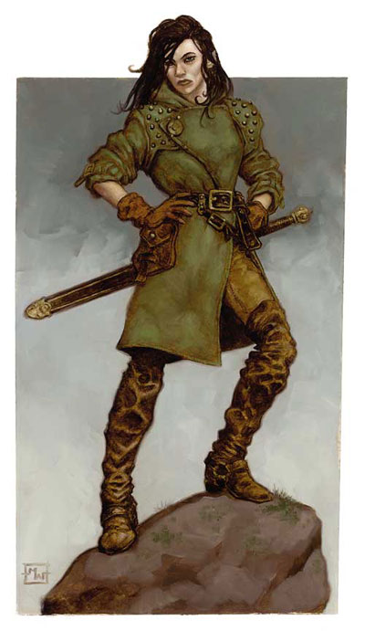

竖琴手斥候是竖琴手的一员，那是个致力于击退邪恶、保存知识和维持文明与自然平衡的秘密结社。竖琴手斥候学习秘法术和许多技能以利他们从事间谍活动、潜行和回报资讯的任务。
许多竖琴手斥候是吟游诗人，但这并不代表全部都是。游侠、盗贼、术士和法师也是成为竖琴手斥候的一般职业，因为这些职业倾向多才艺和机动性，都具有某些操纵他人、对外界心灵影响的抗力、敏锐的行为或洞察力以及解决问题的天赋之技能。
并非所有的竖琴手都是竖琴手斥候这个进阶职业，而且组织内的阶级并不依据该人物在这个职业或其他职业的等级。然而，大部分高阶的竖琴手都至少拥有一级的竖琴手斥候这个进阶职业。
生命骰数：d6
职业等级 基本攻击加值 强韧检定 反射检定 意志检定
1 +0 +0 +2 +2
2 +1 +0 +3 +3
3 +2 +1 +3 +3
4 +3 +1 +4 +4
5 +3 +1 +4 +4
职业等级 特殊能力
1 竖琴手知识、1级宿敌
2 德奈尔之眼、专攻技能
3 太摩拉的微笑
4 莉拉之心、2级宿敌
5 制造竖琴手物品
职业等级 每日法术数量 每日法术数量 每日法术数量
1级 2级 3级
1 0 - -
2 1 - -
3 1 0 -
4 1 1 -
5 1 1 0
竖琴手斥候法术列表
1级法术：掩饰术（Camouflage，MoF）、变颜术、
魅惑人类、通晓语言、抹消术、羽落术、
火焰手（Handfire，MoF）、传令官之号令
（Herald’s Call，MoF）、跳跃术、光亮术、
昏暗视觉（Low-Light Vision，MoF）、
传讯术、召唤座骑、阅读魔法、散射术
（Scatterspray，FRCS）、睡眠术、蛛行术。
2级法术：轻灵术、黑暗视觉、侦测思想、显赫术
（Eagle’s Splendor，FRCS）、简易追踪
（Easy Trail，MoF）、隐形术、敲击术、
物品定位术、魔嘴术、误导术、识破隐形、
阴影面具（Shadow Mask，FRCS）。
3级法术：锐耳术/鹰眼术、活化印象
（Living Prints，MoF）、集体掩饰术
（Mass Camouflage，MoF）、回避侦测、
暗示术、巧言术、隐匿阵营。
职业要件
要具备成为一个竖琴手斥候的资格，人物必须满足以下所有条件：
阵营：任何非邪恶阵营。
技能：唬弄级数4、交涉级数8、知识【地方】级数4、
表演级数5、察言观色级数2、野外求生级数2。
专长：警觉、钢铁意志。
特殊要求：一位竖琴手的保证和高阶竖琴手的赞成。
本职技能
竖琴手斥候的本职技能（和每个技能的关键属性）为：
估价（智力）、唬弄（魅力）、攀爬（力量）、工艺
（智力）、交涉（魅力）、易容（魅力）、脱逃
（敏捷）、搜集资讯（魅力）、躲藏（敏捷）、方向感
（睿智）、跳跃（力量）、知识【任何】（智力）、聆听
（睿智）、潜行（敏捷）、表演（魅力）、扒窃
（敏捷）、专业（睿智）、察言观色（睿智）、语言
（魅力）、游泳（力量）、特技动作（敏捷）。
每等级的技能点数：4+智力调整值。
职业特性
擅长武器与防具（Weapon and Armor Proficiency）
竖琴手斥候擅长所有一般武器和轻型盔甲。
每日法术（Spells per Day）
1级开始，竖琴手斥候得到施展小部份秘法术的能力，竖琴手斥候能施展这些法术如同吟游诗人一般（基于魅力且不需准备）。
一个1级的竖琴手斥候能从竖琴手斥候1级法术列表习得两个法术，在之后的竖琴手斥候等级，他能学得两个新的任何等级他可施展的竖琴手斥候法术。没有限制竖琴手斥候从这张列表知道这些法术的数量，他可以从研究秘法卷轴或法术书学得。
竖琴手知识（Harper Knowledge）
如同吟游诗人，竖琴手斥候拥有习得零碎知识的技巧，这个能力作用如同吟游诗人的逸闻知识。如果一个竖琴手斥候拥有吟游诗人等级，他的竖琴手斥候等级和吟游诗人等级可以累计在使用逸闻知识上。
宿敌（Favored Enemy）
竖琴手斥候从下列与竖琴手目标对立的邪恶组织名单中选择一个宿敌：班恩教会、龙巫教、铁王座、红袍巫师或散塔林会，这个能力作用如同游侠一般。如果一个拥有游侠等级的竖琴手斥候选择一个在游侠时便已选择的宿敌，加值累计。
当竖琴手斥候达到4级，这个对抗他宿敌的加值增加为+2，并且得到一个新的宿敌+1。
德奈尔之眼（Deneir’s Eye）
竖琴手斥候得到+2圣力加值在对抗结界、符文和徽记的检定。
专攻技能（Skill Focus）
竖琴手斥候得到专攻技能专长在他的表演技能或任何其他竖琴手斥候的本职技能。
太摩拉的微笑（Tymora’s Smile）
每日一次，竖琴手斥候可加上+2运气加值在单一的豁免检定，这个加值可以加在掷出死亡和未调整的掷骰成功或失败已确定后。
莉拉之心（Lliira’s Heart）
竖琴手斥候得到+2圣力加值在对抗胁迫和恐惧效果的豁免检定。
制造竖琴手物品（Craft Harper Item）
一个特殊形式的制造奇物专长，这让竖琴手斥候能创造魔法乐器、竖琴手徽针和特定药水（魅力、侦测思想、舌灿莲花、巧言和真实），这个能力取代了任何其他关于这些物品需要的制造物品专长，竖琴手斥候对于这些物品的施法等级等于他竖琴手斥候等级加上所有其他施法职业的施法等级。所有对于物品的基本要求（如种族或法术）仍然相同，所有其他关于制造奇物或药水的规则适用之。
译者注：Deneir、Tymora、Lliira都是神名。